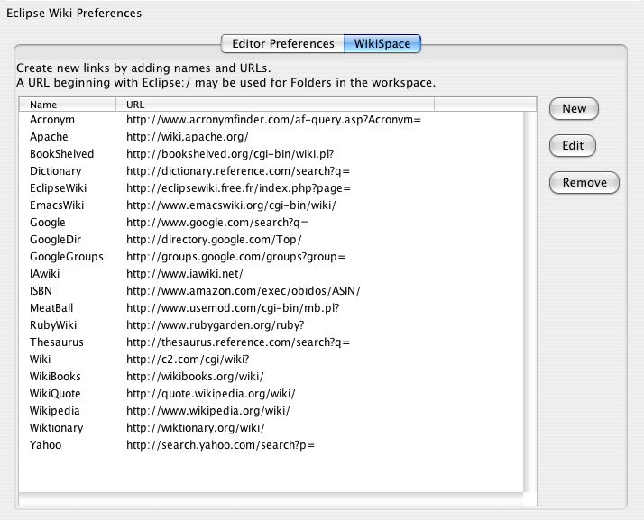
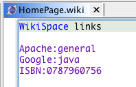

The WikiSpace is a configurable collection of aliases enabling you to create links to external resources such as wikis, websites, and bugtracking tools. In addition, aliases can be made to eclipse resources using URLs of the form: Eclipse:[workspace relative path]
There are a default set of WikiSpace links defined in preferences:

To use the links simply type the alias followed by a colon and then a suffix which completes the link.
You can override the global wikispace settings and add local aliases by adding a properties file called wikispace.properties of names and links to a directory containing wiki documents. The WikiSpace aliases defined in this property file will add to and override the global WikiSpace aliases defined in the Wiki Preferences. The property key is the name you will use in wiki documents, and the value is the URL the alias is for.
For example,
EclipseBugs=https://bugs.eclipse.org/bugs/show_bug.cgi?id=
will allow links such as EclipseBugs:1234 to
be made.
Note that links made to eclipse resources should have a trailing slash if they are folders.
Code=Eclipse:/MyProject/src/